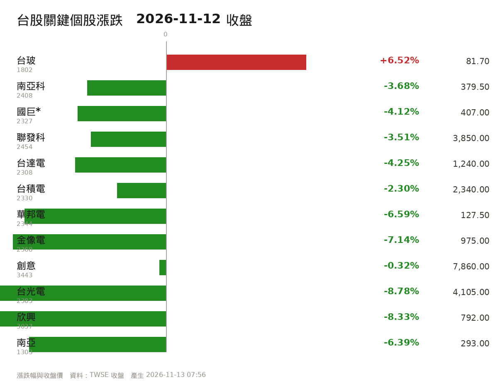

2026-11-13 投資日報2026-11-13 07:00
今天是交易日（週五 09:00 開盤）。本報台股數字為 11/12（四）收盤，美股為 11/12（四）美股收盤。
重點提醒｜Emmy（持續中）
來源：
財經頻道/Emmy追劇時間/Emmy重點提醒追蹤.md。未解除就會每天出現；判定解除當天標「過期」，隔天起不再列出。
- E1 輝達 NVDA／黃仁勳 真正風險不是技術洩密，是「走私晶片＋長期遊說晶片禁令」的國安問題。已持續 1 天。⬆️ 惡化：11/12 21:57 董事會宣布黃仁勳辭去總裁、CEO、董事，Kress 暫代、Harvey C. Jones 首任董事長，啟動永久 CEO 遴選；輝達 11/12 收 166.19（-4.34%）、單日市值蒸發約 1,821 億美元；她 11/13 貼文再提「爆料不會停」並傳出庫克在繼任人選序列（消息面）。解除條件：正式（非臨時）新任 CEO 定案並公開承諾對台供應鏈與產品路線不變，且 11/17 財報與 11/18 國會簡報後無新增出口管制。
- E2 台股／美股大盤 民主黨期中選舉大勝 → AI 資料中心與科技業監管收緊的恐慌，是 11/05-11/06 崩盤主因。已持續 5 天。➡️ 未變。解除條件：具體監管法案送進國會並過關，或政策明確轉向寬鬆。
- E3 台股／美股大盤 「熊市要來了嗎、該獲利了結嗎」——她事前提示了這一波下殺。已持續 12 天。➡️ 未變：指數 11/12 收 43,091（-2.63%），仍在季線（約 4.5 萬）之下；外資連 11 賣。解除條件：指數站回季線且外資轉為連續買超。
- E4 油價／布蘭特原油 中東戰火推升油價 → 通膨壓力 → 股市下跌。已持續 15 天。⬇️ 緩解（未達解除）：布蘭特自影片所述的逼近 120 回落至 95.77，但 11/12 因川普稱「不需要與伊朗達成協議」單日反彈 +3.24%，仍在 90 以上。解除條件：布蘭特回落至 90 美元以下且中東衝突降溫。
- E5 記憶體族群／8299 群聯 大摩一次降 6 檔記憶體、目標價腰斬，群聯 2,588→1,357 降為「劣於大盤」；理由是 2028 供需恢復平衡＋美國資料中心約兩成產能延後到 2029。已持續 2 天。⬆️ 惡化：11/12 群聯再跌 5.49% 收 1,635，收在當日最低，利空未消化完。解除條件：NAND 現貨報價重新轉強且外資對群聯轉為買超，或大摩回補評等。
🚨 警報狀態（你必須知道的事）
- 11/12 盤中 L1 警報已觸發兩次：大盤（-2.63%）、群聯（-5.49%），狀態檔
~/stockboard/alert_state.json記錄日期 2026-11-12、等級 L1。 - 你還沒有回「已處理／不處理」：
alert_ack.json最後一次回覆仍是 2026-11-08。依規則，沒有 ack，警報就會一直重發。 - 今天（11/13）是新的一天，11/08 的 ack 不保護你。09:00 起
危機警報 盤中每5分會照常跑（next run 09:00），達 L1（大盤 -2%／個股 -5%）會重新通知你。 - 兩支危機排程都啟用中：
危機警報 盤中每5分（b8b06d41543b）、危機警報 影片檢查22:20（fe75a6f134cf）。沒有失效。
① 一句話結論
黃仁勳真的辭職了（11/12 21:57 生效，財務長 Kress 暫代、前 Synopsys 執行長 Harvey C. Jones 任首任董事長），但美股只小跌：道瓊 -0.36%、標普 -0.35%、那指 -0.39%、費半 -0.54%，而 AMD +5.86%、博通 +5.54% 逆勢大漲 —— 資金不是撤離晶片股，是換股（從輝達流向 ASIC／第二供應商）。台指期夜盤逆勢漲 548 點、台積電期貨 +11 元。今天真正的對撞是「台股昨天已單獨先殺 1,165 點」對上「夜盤已翻紅」：只看兩個價位——加權 43,000、台積電 2,300。守住是震盪換手，跌破就是新一波。
② 國際與美股（11/12 美股收盤）
| 指數 | 收盤 | 漲跌 |
|---|---|---|
| 道瓊工業 | 52,297.09 | -189.40（-0.36%） |
| 標普 500 | 7,592.40 | -26.98（-0.35%） |
| 那斯達克 | 25,366.09 | -100.10（-0.39%） |
| 費城半導體 | 10,506.67 | -57.44（-0.54%） |
| 羅素 2000 | 2,799.06 | -1.66% |
| VIX 恐慌指數 | 18.70 | +6.92% |

關鍵個股
| 個股 | 收盤 | 漲跌 | 判讀 |
|---|---|---|---|
| 輝達 NVDA | 166.19 | -4.34% | 盤前一度 -13%，收斂到 -4.34%；單日市值蒸發約 1,821 億美元 |
| 台積電 ADR | 405.49 | -1.90% | 沒有跟著輝達崩，但也沒轉強 |
| AMD | 585.30 | +5.86% | 資金明確轉向「非輝達」的 AI 晶片 |
| 博通 AVGO | 364.36 | +5.54% | ASIC／網通受惠 |
| 高通 QCOM | — | +0.32% | 溫和 |
| 應用材料 AMAT | — | -3.58% | 設備股偏弱 |
| 美光 MU | 798.44 | -1.59% | 記憶體續弱 |
| SanDisk | 937.46 | -4.11% | NAND 最弱，直接對應群聯 |
| SK 海力士 ADR | — | -3.19% | 同上 |
下跌主因（已發生）
- 黃仁勳辭職：董事會 11/12 宣布黃仁勳辭去總裁、執行長及董事職務，即起生效；財務長 Colette Kress（59 歲）任臨時執行長兼 CFO；Harvey C. Jones（前 Synopsys 執行長）任公司史上首任董事長；同時啟動永久 CEO 遴選，內外部人選都考慮。
- 川普談伊朗：稱「美國已不需要與伊朗達成協議」→ 油價跳升，通膨疑慮回頭。
- Fed 官員偏鷹：舊金山聯準銀行總裁戴莉、克里夫蘭總裁哈瑪克均釋出「可能需要進一步升息」訊號。
上漲的部分（別只看跌）
- AMD +5.86%、博通 +5.54%：法人解讀為「純超微（AMD）、ASIC 供應鏈可望受惠」，這是換股不是撤資。
- Alphabet +1.79%、亞馬遜 +0.48%、微軟 +0.36%、特斯拉 +1.70%。
跨市場（11/12 收盤，Yahoo）
| 項目 | 數值 | 變化 | 意義 |
|---|---|---|---|
| 美 10 年期公債殖利率 | 5.103% | +10.5 bp（11/09 4.86% → 11/12 5.10%） | 四天內急升，壓抑高評價科技股 |
| 美 5 年期 | 4.945% | +11.8 bp | 短端同步 |
| 美元指數 | 103.17 | +0.25%（四天 101.65 → 103.17） | 資金回流美元 |
| 布蘭特原油 | 95.77 | +3.24% | 川普談話推升 |
| 西德州原油 | 88.70 | +2.51% | 同上 |
| 黃金 | 3,881.7 | -2.97% | 避險需求反而降溫 |
| 美元兌台幣 | 32.932 | -0.07% | 台幣仍貼著 33 元 |
| VIX | 18.70 | +6.92% | 恐慌升溫但未失控 |
一句話：輝達換 CEO 只讓美股跌 0.35%，但「油價 +3.3%、10 年殖利率 5.1%、Fed 官員喊再升息」這三件事，才是壓著評價的真正重量。
③ 台股覆盤（11/12 收盤）
| 項目 | 數值 |
|---|---|
| 加權指數 | 43,091.87（-1,165.28、-2.63%） |
| 開盤 / 最高 / 最低 | 開低後一度翻紅 44,525.24 / 最低盤中 -1,313 點 / 收在接近全日最低 |
| 成交金額 | 1 兆 132.93 億元（中央社；工商寫 1.05 兆、鉅亨寫 1.01 兆，統計口徑不同） |
| 當沖比 | 47.4%（7/31 以來最高） |
| 上市漲跌家數 | 上漲 274 ／ 下跌 731 |
| 上櫃漲跌家數 | 上漲 218 ／ 下跌 563 |
| 漲停家數 | 上市 12 ＋ 上櫃 23 ＝ 35 檔（低於 40 檔基本門檻） |

盤勢節奏：開低 → 早盤一度翻紅到 44,525（本波反彈新高，自 37,837 起算反彈 6,688 點）→ 盤中傳出輝達董事會準備撤換黃仁勳 → 由紅翻黑 → 最低殺 1,313 點 → 終場收 43,091，價跌量增、收長黑 K。 技術位置：收盤仍在 10 日線之上（10 日線與 43,000 幾乎重疊）；上方半年線約 45,411 是第一道壓力，下方年線約 39,085 是多方重要支撐；前一天低點 42,708 沒跌破。
三大法人（11/12，證交所）
| 法人 | 金額 | 連續 |
|---|---|---|
| 外資及陸資 | 賣超 6.84 億元 | 連 11 賣（累計 8,312.52 億） |
| 投信 | 買超 123.85 億元 | 連 23 買 |
| 自營商 | 賣超 65.41 億元 | 由買轉賣 |
| 合計 | 買超 51.59 億元 | — |
| 官股（另計） | 買超約 23.68 億元 | — |
三個「有變好」的籌碼數字（昨天日報還看不到）
- 外資台指期淨空單降到 99,573 口（-4,698 口），終於跌破 10 萬口——這是 11/09 以來第一次回落。
- 融資餘額減少 76.83 億元——散戶槓桿在退，這比融資增加健康。
- 外資現貨只賣 6.84 億（前幾天是 341 億、900 億級），賣壓明顯縮手。分析師蔡明翰：外資通常落後大盤 3～4 天，「已有轉向偏多跡象，但信心脆弱」。
但這三件事不能當利多：投信買超是政府基金護盤；當沖比 47.4% 代表短線投機盤主導；漲停只剩 35 檔、下跌家數 731 家 >> 上漲 274 家，是「指數跌、個股更跌」的結構。
外資買賣超重點（11/12）
- 買超：台玻 1802 +14.03 萬張（連 5 買，個股成交王，收 81.7 元 +6.52%、量 48.4 萬張）、統一台股增長 00981A +2.46 萬張、GIS-KY +1.86 萬張、元大金 +1.84 萬張。
- 賣超：群創 -3.45 萬張、仁寶 -1.73 萬張、廣達 -1.34 萬張、台積電 -3,955 張（由買轉賣）。
④ 頻道影片重點
資料來源：
財經頻道/一綺聊股/2026-11-12_黃仁勳爆出小四_恐遭撤換/筆記.md（11/12 23:10 完成）、2026-11-11_大摩開槍降評記憶體旺宏/筆記.md（11/12 23:50 完成）。兩集都是語音辨識逐字稿，數字已回查新聞。
🔴 看多／加碼（2026-11-12 集）
- 2317 鴻海｜Q3 營收年增 46%、EPS 5.51，營收／營業利益／淨利／EPS 四項創單季新高，「走的相對強，畢竟前一季也沒什麼漲到」 ⏱[33:22]
- 2330 台積電｜她引法人推估：輝達已超過蘋果成為台積電第一大客戶、約占營收 10~20%（公司未證實） ⏱[29:10]
- 台股大盤｜43,000 附近有低接買盤，是月線／季線「30 天＋90 天套牢區」的必經換手 ⏱[15:05]
- 2357 廣達｜引公司說法：目前沒有看到掉單，第三季財報也還 OK ⏱[00:40]
- 2026-11-11 集補充｜PCB／玻纖布優於記憶體：「資金有限的話，我不會選記憶體，我會選 PCB」 ⏱[33:20]；台玻 10 月營收 55.66 億創高 ⏱[34:30]
🟢 危機／減碼（2026-11-12 集）
- 輝達 NVDA｜董事會深夜表決去留，11 席過半可「有無理由」解職，市場一度給近九成機率 ⏱[17:16]
- 輝達目標價｜Baird 500→200 美元、另一家 400→200；大摩維持 300 但移出首選名單；美銀移出 US1 ⏱[26:25]
- 台股｜反彈到月線／季線就遇 30 日＋90 日套牢賣壓，今天高低震盪 1,500 點、殺 1,165 點；她明說「今天也不用追高了」 ⏱[13:14]
- AI 供應鏈｜「卡車上的豬」：司機（黃仁勳）下車，整車供應鏈要先停看，下一位司機是誰 ⏱[24:37]
- ABF 載板｜外資殺很兇，南電、景碩雙雙跌停；景碩處置到 11/16、投信賣超很多 ⏱[38:03]
- **操作心法（她引超大資金朋友）**｜這階段是「少做」不是抄底；「不能大賠，可以少賺」 ⏱[35:00]
- 2026-11-11 集補充｜8299 群聯被大摩降到「劣於大盤」、目標價 2,588→1,357 ⏱[25:50]；記憶體六檔目標價腰斬（旺宏 220→90、華邦電 288→120、力積電 111→54） ⏱[24:50]
📊 情緒溫度計（兩集合計，grep 實算）
| 集數 | 危機詞 | 看多詞 | 語氣 |
|---|---|---|---|
| 11/12 黃仁勳爆小四 | 0 | 1 | 防禦、觀望、事件驅動（「輝達」講 28 次、「黃仁勳」7 次，等於每 1.4 分鐘一次） |
| 11/11 大摩降評 | 0 | 10 | 中性偏多，但對記憶體轉保守 |
她連續三集（11/10、11/11、11/12）都是同一套框架：不追高、壓力區減碼。 11/12 唯一的升級是風險類型從「籌碼面」變成「治理面」。
📮 Emmy 社群貼文（2026-11-13，貼文非影片）
| 她提出的現象／危機 | 性質 | 對台股意義 |
|---|---|---|
| 黃仁勳的爆料「會接二連三」，情報單位真要他下台「不愁沒有後續爆料素材」 | 她的判斷（預估） | 輝達治理折價會拖長，不是一次性事件 |
| 同事轉來「蘋果庫克可能在輝達新執行長人選序列」的新聞 | 🟠 消息面傳聞（她未給出處） | 若由外部大廠 CEO 接手，對台採購與產品節奏會重談 |
| 真正紅線是走私晶片＋長期遊說華府，屬國安層級，不是技術洩密 | 她的判斷 | 政策風險，無法用財報對沖 |
| 技術洩密「不用太擔心」：護城河是 CUDA 生態，AMD 都追不上 | 她的判斷（偏多的一面） | 支持「AI 需求不會因換 CEO 消失」的長線看法 |
留言區：多位觀眾在直播中即時回報「黃仁勳辭職了」，比主持人當時的「恐遭撤換」更接近事實。這則貼文完全沒提 2330、2454、8299，也沒有價位。
📺 一綺聊股最近一期（2026年11月12日）
2026年11月12日 黃仁勳爆出小四！恐遭撤換？華爾街砍輝達目標價！引爆台股下殺千點？
🔗 筆記：財經頻道/一綺聊股/2026-11-12_黃仁勳爆出小四_恐遭撤換/筆記.md
🟢 可以留意／建倉的標的
- 鴻海（2317） Q3 營收年增 46%、EPS 5.51，營收／營業利益／淨利／EPS 四項創單季新高；她說「走的相對強，畢竟前一季也沒什麼漲到」
- 台積電（2330） 她引法人推估：輝達已超過蘋果成為台積電第一大客戶、約占營收 10~20%（公司未證實）
- 台股大盤 43,000 附近有低接買盤，她說這是「月線／季線 30 天、90 天套牢區」的必經換手
- 廣達（2357） 她引公司說法：目前沒有看到掉單，第三季財報也還 OK
🔵 中長期展望（產業趨勢）
- 新任 CEO 是誰：Kress 是財務出身、不是技術派；若最終由外部（甚至 Lisa Su 這種傳聞人選）接手，輝達的產品節奏與對台採購策略都可能變。
- AI 資本支出：Baird 已把大型雲端 2027 年 AI 支出年增下修到 40% 或更低；這是比「換 CEO」更慢、但更實質的殺傷力。
- ABF 載板：法人上修 2027 獲利、外資卻先跑，這種「基本面轉好、股價先修正」的組合，跟 2022 年那一輪一模一樣。
- 輝達的護城河是 CUDA 生態與供應鏈，不是一個人；但「創辦人型 CEO 突然消失」的折價會持續一段時間（可參考蘋果在賈伯斯之後的估值路徑）。
- 對台灣的意義：AI 供應鏈的接單不會一天消失，但「誰是窗口」會重排——鴻海、廣達、台積電的法說都說「沒掉單」，這種話在客戶換 CEO 時只能信一半。
🔴 危機／要避開
- 避開 輝達（NVDA） 董事會深夜表決去留，過半數同意即可「有無理由」解職；她說市場一度給近九成機率
- 輝達目標價 Baird 由 500 砍到 200 美元、另一家 400 也砍到 200；摩根士丹利維持 300 但移出首選名單
- 台股 反彈到月線／季線就遇 30 日＋90 日套牢賣壓，今天高低震盪 1,500 點、殺 1,165 點；她明說「今天也不用追高了」
- AI 供應鏈 「卡車上的豬」比喻：司機（黃仁勳）下車，整車供應鏈要先停看，下一位司機是誰
- ABF 載板 外資近來「殺很兇」，南電、景碩雙雙跌停；景碩處置到 11/16，投信賣超很多
- 操作心法（她的超大資金朋友） 這個階段是「少做」，不是抄底；「不能大賠，可以少賺」
🚫 不要做的事（避坑）
- 不要因為「今天跌 1,165 點」就急著撿——她的原話是「今天也不用追高了」，低接的前提是 43,000 守住。
- 不要攤平、不要融資——事件型風險（CEO 更換）沒有技術面可以參考，攤平等於把不確定性放大。
- 不要把「投信買超 123.85 億」當成利多——那是政府基金護盤，不是需求回來。
- 不要照影片的「輝達低點 120~145 美元」去買輝達或相關 ETF——那是她個人推估，不是原始報告。
📌 本集結論
- 今天的殺盤是「事件＋技術面」同時發生：輝達治理風險是導火線，月線／季線的 30 日＋90 日套牢區是火藥；兩者疊加才有 1,165 點。
- 影片錄完後，最大的不確定性已經消失——但方向是壞的：黃仁勳真的辭職，接手的是財務出身的 Kress，不是技術接班人。市場現在交易的是「沒有創辦人的輝達」，不是「輝達的財報」。
- 台股基本面沒有轉壞，轉壞的是「客戶關係的能見度」：鴻海 Q3 四項創高、台積電 10 月營收仍強，但「誰是輝達的窗口」這個問題在 11/17 財報前沒有答案。
⑤ 我的持股動態
2330 台積電
| 項目 | 數值 |
|---|---|
| 11/12 收盤 | 2,340 元（-55、-2.30%） |
| 開 / 高 / 低 | 2,385 / 2,395 / 2,330（收在低點附近） |
| 成交量 | 28,991 張 |
| 外資 | -3,955 張（由買轉賣），近 5 日 -37,702 張、近 10 日 -104,899 張 |
| 美股對照 | 台積電 ADR 405.49（-1.90%） |
- 影片觀點：輝達是台積電第一大客戶（法人推估占營收 10~20%，公司未證實）；輝達換人會影響供應鏈能見度。她的說法屬推估，不是掉單事實。
- 已發生的新事件：11/12 傳出駭客在地下論壇拍賣 4.6 萬筆台積電員工個資（6.9GB、開價 3 BTC ≈ 740 萬台幣）。公司回應：部分現職及離職員工資訊未經授權被置於外部網站，但無證據顯示系統遭入侵，資料與某雲端服務供應商系統相符，與生產或客戶相關資料無關；已通知受影響人員。→ 屬聲譽／法遵事件，不是營運事件。
- 法人看法（11/13 經濟日報）：對台積電影響中性——晶圓代工不分設計廠，AI 晶片市占重分配不改變先進製程與 CoWoS 總需求；真正風險是出口管制收緊。
- 關鍵價位：2,300 整數（今天多空線）／2,285（11/10 收盤）／上方 2,395（11/11 高點）。
2454 聯發科
| 項目 | 數值 |
|---|---|
| 11/12 收盤 | 3,850 元（-140、-3.51%） |
| 開 / 高 / 低 | 4,050 / 4,120 / 3,805 |
| 成交量 | 11,996 張 |
| 外資 | +1,638 張（買超 1 天），近 5 日 -7,846 張 |
- 影片觀點：11/12 那集完全沒提聯發科；11/11 那集只把它歸在「4.3 萬以下買的都賺」那一組。
- 它的風險不在輝達治理，在手機 SoC 與 ASIC 需求。昨天早盤還開 4,050、衝 4,120，終場收 3,850（離當日高點 -270 元），是「開高走低」最明顯的一檔。
- 關鍵價位：3,800 整數（今天防線）／3,805（昨低）／4,120（昨高）。外資昨天是買超，這是三檔裡籌碼相對好的一檔。
8299 群聯
| 項目 | 數值 |
|---|---|
| 11/12 收盤 | 1,635 元（-95、-5.49%） |
| 開 / 高 / 低 | 1,725 / 1,765 / 1,635（收當日最低） |
| 成交量 | 3,599 張 |
| 美股對照 | SanDisk -4.11%、美光 -1.59%、SK 海力士 ADR -3.19% |
- 這是三檔裡最弱的一檔，而且弱的原因跟輝達無關：大摩 11/11 把評等降到「劣於大盤」、目標價 2,588→1,357（-48%），理由是 2028 年記憶體供需恢復平衡＋美國資料中心約兩成產能延後到 2029。
- 基本面（已發生）：Q3 營收 860.76 億（季增 26.8%、年增 374.6%）、EPS 138 元；10 月營收 315.3 億（年增 346%）；AI 業務占比 57%→65%。
- 判讀：這是「獲利上修、目標價腰斬」——外資砍的是倍數，不是 EPS。昨天收在最低，代表賣壓還沒結束。
- 關鍵價位：1,600 整數／1,635（昨低）／跌停參考 1,555；大摩目標價 1,357 是外資心裡的錨。
三檔共同點：11/12 全部收黑、全部留上影線或收最低，且都是「跟著事件跌」，不是「跟著基本面跌」。但也別因此安慰自己——紀律看的是價位，不是理由。 ⚠️ 你的持股成本與股數在
~/vault/持股/三份檔案裡仍是空白，所以算不出 -7% 停損價。今天請把成本填進去，這是目前最該補的一件事。
⑥ 觀察清單與法人動向
台股觀察清單（12 檔）
| 代碼 | 名稱 | 現價 | 漲跌 | 成交量 |
|---|---|---|---|---|
| 2330 | 台積電 | 2,340.0 | -2.30% | 28,991 張 |
| 2308 | 台達電 | 1,240.0 | -4.25% | 14,791 張 |
| 2454 | 聯發科 | 3,850.0 | -3.51% | 11,996 張 |
| 3443 | 創意 | 7,860.0 | -0.32% | 3,346 張 |
| 2383 | 台光電 | 4,105.0 | -8.78% | 4,262 張 |
| 2408 | 南亞科 | 379.5 | -3.68% | 59,023 張 |
| 3037 | 欣興 | 792.0 | -8.33% | 27,426 張 |
| 1802 | 台玻 | 81.7 | +6.52% | 483,656 張 |
| 1303 | 南亞 | 293.0 | -6.39% | 148,617 張 |
| 2327 | 國巨* | 407.0 | -4.12% | 36,294 張 |
| 2368 | 金像電 | 975.0 | -7.14% | 10,867 張 |
| 2344 | 華邦電 | 127.5 | -6.59% | 76,354 張 |
外資動向（買賣超，單位：張）
| 代碼 | 名稱 | 今日 | 連續 | 近 5 日累計 | 近 10 日累計 |
|---|---|---|---|---|---|
| 1802 | 台玻 | +140,326 | 買超 5 天 | +264,796 | +265,727 |
| 2408 | 南亞科 | +2,870 | 買超 3 天 | +19,821 | -10,856 |
| 2454 | 聯發科 | +1,638 | 買超 1 天 | -7,846 | -25,591 |
| 2383 | 台光電 | +201 | 買超 1 天 | -3,305 | -6,705 |
| 2327 | 國巨* | +2,248 | 買超 3 天 | +1,978 | -30,847 |
| 3443 | 創意 | +41 | 買超 1 天 | -996 | -1,937 |
| 2330 | 台積電 | -3,955 | 賣超 1 天 | -37,702 | -104,899 |
| 3037 | 欣興 | -1,390 | 賣超 2 天 | -17,914 | -35,130 |
| 1303 | 南亞 | -5,163 | 賣超 2 天 | -16,729 | -81,677 |
| 2308 | 台達電 | -1,967 | 賣超 11 天 | -10,829 | -30,332 |
| 2344 | 華邦電 | -4,534 | 賣超 3 天 | -9,646 | -79,920 |
| 2368 | 金像電 | -1,124 | 賣超 2 天 | -3,745 | -7,964 |
法人資料截止：2026-11-12（TWSE T86）｜報價時間 13:30:00
今日（11/13）盤面兩個新變數（已發生）
- MSCI 半年度調整：台股指數新增 南電 8046、景碩 3189、台燿 6274（全是 PCB 供應鏈），刪除中租-KY、嘉澤、元太、萬海，成分股降為 73 檔。→ 被動資金會被動買 PCB，這與外資昨天殺 ABF 載板是反向的。
- 法說報喜：鴻海全面上調四大產品線全年展望；華碩 Q4 伺服器營收季增 150%、年增 280%。這是「AI 需求還在」的實體證據，但都在昨天殺盤前公布。
🧮 ETF 共識持股（AI／記憶體・5 大發行商）
追蹤 5 檔 AI／半導體 ETF（5 家不同發行商）的前 25 大持股；≥4 檔同時持有才列入。 ETF：SMH、SOXX、XLK、QQQ、VGT ｜ 查詢：2026-11-13 07:02
| 股票 | 名稱 | 持有 ETF 檔數 | 哪幾檔 | 合計權重 |
|---|---|---|---|---|
| NVDA | NVIDIA Corporation | 5 | QQQ、SMH、SOXX、VGT、XLK | 62.4%（前次 63.9%） |
| AMD | Advanced Micro Devices | 5 | QQQ、SMH、SOXX、VGT、XLK | 28.8%（前次 28.3%） |
| AVGO | Broadcom Inc. | 5 | QQQ、SMH、SOXX、VGT、XLK | 26.2%（前次 25.9%） |
| MU | Micron Technology | 5 | QQQ、SMH、SOXX、VGT、XLK | 23.6%（前次 22.9%） |
| TXN | Texas Instruments | 5 | QQQ、SMH、SOXX、VGT、XLK | 15.4% |
| INTC | Intel Corporation | 5 | QQQ、SMH、SOXX、VGT、XLK | 14.4% |
| AMAT | Applied Materials | 5 | QQQ、SMH、SOXX、VGT、XLK | 12.9% |
| LRCX | Lam Research | 5 | QQQ、SMH、SOXX、VGT、XLK | 11.9% |
| ADI | Analog Devices | 4 | SMH、SOXX、VGT、XLK | 12.0% |
| QCOM | QUALCOMM | 4 | SMH、SOXX、VGT、XLK | 10.9% |
| KLAC | KLA Corporation | 4 | SMH、SOXX、VGT、XLK | 10.8% |
| MRVL | Marvell Technology | 4 | SMH、SOXX、VGT、XLK | 8.6% |
12 檔符合 ≥4 檔 ETF 共識
🔄 本期換股（與上次相比）
（5 檔 ETF 的前 25 大持股沒有變動；權重變化反映的是股價變動：NVDA 62.4%←63.9%，AMD 28.8%←28.3%，AVGO 26.2%←25.9%）
⚠️ 這是「被動資金需求」的參考，不是買進建議。ETF 納入常發生在股價已漲之後，刪除則常在跌完之後。
⑦ SWOT
S（優勢）
- 你目前是現金部位（11/08 起全數出清），這波從 37,837 反彈到 44,525 再殺回 43,091，你沒有被迫停損的壓力。
- 台積電基本面沒鬆動：10 月營收 5,868.9 億（年增 59.71%）創單月新高，Q4 指引 523～543 億美元。
- 籌碼出現三個改善訊號：外資賣超縮手到 6.84 億、期貨淨空單跌破 10 萬口（99,573）、融資減少 76.83 億。
- 台指期夜盤 +548 點、台積電期貨 +11 元，今天開盤有反彈契機。
W（劣勢）
- 持股成本／股數三份檔案全空白 → 算不出 -7% 停損，紀律第三條目前是「無法執行」狀態。
- 11/06 崩跌前（EP.177 已提示）沒減碼，這是已經發生過的紀律失守，不是假設。
- 你手上若是 11/09～11/11 反彈途中才買的，現在已經套住，且昨天收在低點附近。
O（機會）
- MSCI 新增南電、景碩、台燿 → PCB 族群有被動買盤。
- 鴻海 Q3 四項創高、華碩 Q4 伺服器季增 150%：AI 需求在實體訂單上仍看得到。
- AMD +5.86%、博通 +5.54%：資金在「非輝達」的 AI 鏈裡找標的，ASIC／第二供應商是明確的資金流向。
- 11/17 輝達財報若「數字好＋新 CEO 說清楚對台採購」，會是這一波最乾淨的利多。
T（威脅）
- 輝達沒有正式 CEO：Kress 是財務出身、不是技術派，「誰是窗口」在 11/17 前沒有答案。
- 利率：美 10 年殖利率 5.103%、四天 +24 bp，Fed 官員喊再升息 → 高評價科技股的地心引力變強。
- 油價：布蘭特 95.77（+3.24%），川普稱不需要與伊朗達成協議 → 通膨二次壓力。
- 記憶體：大摩降評六檔、群聯被降「劣於大盤」，這是評價問題，會拖很久。
- 台幣 32.93 貼著 33：外資匯出壓力沒解除。
⑧ 財經行事曆
| 日期 | 事件 | 性質 |
|---|---|---|
| 11/13（五）今日 | 台股法說 13 場：國巨*、建準、聯亞、弘塑、台燿 09:00｜英業達 10:00｜建榮、騰輝-KY、羅昇 14:00｜貿聯-KY、晶心科 14:30｜力旺、嘉澤 16:00 | 已排定 |
| 11/13（五） | 美股 11/12 盤後財報：應用材料 AMAT、思科 CSCO | 已發生（台灣清晨公布） |
| 11/16（一） | 台積電、聯電、旺矽、群聯（14:00 法說）、萊德光電-KY | 待發生 |
| 11/17（二） | 輝達 Q3 財報（美東盤後 → 台灣 11/18 清晨） | 待發生（本季最關鍵） |
| 11/18（三） | 美國國會閉門簡報（黃仁勳案）｜Anthropic 定價（區間 70～78 美元）｜台達電、研華、奇鋐、雙鴻法說 | 待發生 |
| 11/19（四） | Anthropic 那斯達克掛牌（ANT）｜台指期 11 月合約結算 | 待發生 |
| 11/26（四） | 美國 10 月 PCE、Q3 GDP 修正值 | 待發生 |
法說會場次依 toalpha 行事曆（2026-11-10 資料），仍以公司公告為準。
⑨ 紀律提醒（讀 ~/vault/交易紀律.md）
先講最重要的：今天是「空頭環境」的紀律，不是「反彈行情」的紀律。
| 紀律條文 | 今天的事實 | 該做什麼 |
|---|---|---|
| 大盤跌破季線且外資連 3 日大賣 → 持股降到 3 成以下 | 指數 43,091 仍在季線（約 4.5 萬）之下；外資連 11 賣（累計 8,312.52 億） | 紀律仍處於觸發狀態。反彈不是解除條件；你的現金部位現在是合規的 |
| 進場三條件（站上 20 日線＋量能 1.5 倍＋非價格催化劑） | 指數在 20 日線下方；催化劑是「輝達換 CEO」＝利空 | 三條全不成立 → 不買。 夜盤 +548 點不是催化劑 |
| 跌破進場價 -7% 無條件賣 | 成本空白，算不出來 | 今天第一件事：把三檔成本／股數填進 ~/vault/持股/ |
| 不用融資、不攤平 | 融資昨天減少 76.83 億（好事） | 就算今天開高，也不要因為「少賠」就攤平 |
| 現金水位 ≥20% | 你目前 100% 現金 | 合規。空手是一種部位 |
與昨晚紅綠清單衝突的地方（一定要看）
- 影片 🔴 說「43,000 有低接買盤」、「鴻海 Q3 創高」、「廣達沒掉單」——同一集她說「今天也不用追高了」「不能大賠，可以少賺」「這階段是少做不是抄底」。紅綠同時存在時，紀律的答案是「不進場」，不要只挑紅的那一半看。
- 影片 🔴 說台積電「輝達占營收 10~20%」——這是法人推估、公司未證實。不要把它當成「台積電很危險」的理由去砍股票，也別當成「輝達一定不會跑」的理由去買。
- 她 11/09 的紅標（聯發科、群聯、南亞、國巨、PCB）與紀律「空頭不加碼」直接衝突——那是她自己的成本與節奏，不是你的買點。
今天最該忍住的三件事
- 看到夜盤 +548 點就想「開盤先買一趟」→ 這是追價，不是進場。
- 看到台積電 2,340「比 2,395 便宜」就想接 → 便宜不是催化劑，20 日線沒站上就不買。
- 看到群聯跌 5.49% 想攤平 → 紀律第四條第 2 款：不攤平虧損，而且它昨天收在最低。
⑩ 資料來源與限制
報價／籌碼
- 台股即時：本機看板
127.0.0.1:8787/api/quotes（TWSE，11/12 13:30 收盤） - 三大法人：證交所 T86（20261112）／中央社、鉅亨、Yahoo 財經
- 期貨：永豐期貨（外資淨空單 -99,573 口）、鉅亨（-4,700 口，口徑略異）
- 美股／跨市場：Yahoo Finance chart API（
us_close_report.py、macro.py，11/13 05:00 後抓取）
新聞查證
- 黃仁勳辭職：AP、Reuters、CNBC、TechCrunch、經濟日報（中央社 11/13 00:48）、工商時報（11/13 紙本）、三立新聞（11/13 盤前）
- 台股 11/12 收盤：中央社（43,091.87、-1,165.28、1 兆 132.93 億）、鉅亨、工商時報、TVBS、Focus Taiwan
- 台積電資安：自由財經、工商時報、TechNews、Taiwan News（11/12，公司回應原文）
- MSCI 調整、鴻海／華碩法說：鉅亨「台股盤前要聞」（11/13 05:10）
- 法說會行事曆：toalpha.tw（資料日 2026-11-10）
知識庫引用
財經頻道/一綺聊股/2026-11-12_黃仁勳爆出小四_恐遭撤換/筆記.md財經頻道/一綺聊股/2026-11-11_大摩開槍降評記憶體旺宏/筆記.md財經頻道/Emmy追劇時間/Emmy追劇貼文2026-11-13.md（今日新增整理版）、Emmy重點提醒追蹤.md（今日更新，新增 E5）財經頻道/週報/2026-W45.md（11/08 產出，內容是 11/07 的空頭視角，已落後 5 個交易日，僅供對照，不再當成今日結論）交易紀律.md、持股/（三份成本欄位仍空白）
限制（請務必看）
- 今日沒有
日報/素材/2026-11-13_盤前預警.md：06:40 的盤前跨市場預警排程有正常執行（last run 06:40 ok），但該腳本只發 Telegram、沒有寫入素材檔，所以本報第 ② 段沒有「🌙 盤前跨市場預警」區塊。這是流程缺口，不是今天才壞。 - 11/12 成交金額有三個版本（1 兆 132.93 億／1.01 兆／1.05 兆），本報採中央社（證交所）數字，其餘標註來源。
- 三大法人合計有 51.59 億（中央社／證交所）與 53.4 億（三立，可能含官股）兩個版本，採前者。
- 「庫克可能在輝達新任 CEO 人選序列」為 Emmy 轉述同事看到的新聞，未見公司或主流媒體正式報導 → 標為消息面傳聞，不作為判斷依據。
- 兩集影片皆為語音辨識逐字稿（無中文字幕），專有名詞與數字有失真，本報數字已全部回查新聞／公告。
- 2330／2454／8299 的成本與股數仍空白，本報無法計算個人停損價與部位比重。
- 本報所有「預估」「目標價」「法人推估」皆已標示性質；未標示者為已發生事實。
產生時間：2026-11-13 07:00（台北）
快速跳轉
👉 ① 今日要守的紀律 ｜ ② 走勢圖 ｜ ③ 濃縮精華
① 今日要守的紀律
- 指數 43,091 還在季線（約 4.5 萬）之下、外資連 11 賣 → 紀律是「持股 3 成以下」，現在 100% 現金是合規的。
- 進場三條件全不成立（20 日線在上方、催化劑是利空）→ 今天不買。夜盤 +548 點不是理由。
- 兩個價位決定今天的性質：加權 43,000、台積電 2,300。守住＝震盪換手；跌破＝新一波。
- 先把三檔成本填進
持股/，-7% 停損價才算得出來。沒填之前，紀律第三條無法執行。 - 不追、不攤平、不融資。 群聯昨天收在最低，攤平等於把不確定性放大。
② 走勢圖
美股（2026-11-12 收盤）
台股加權指數（近 5 個交易日 11/06～11/12）
台股關鍵個股漲跌（11/12 收盤）

漲停（12 檔）
百一 6152、宏碁遊戲-創 6908、大眾控 3701、攸泰科技 6928、敬鵬 2355、定穎投控 3715、冠西電 2466、競國 6108、大銀微系統 4576、鴻碩 3092、麗臺 2465、GIS-KY 6456
跌停（10 檔）
聯茂 6213、AMAX-KY 6933、南電 8046、乙盛-KY 5243、景碩 3189、禾伸堂 3026、健策 3653、聚賢研發-創 7631、力銘 3593、台揚 2314
判定方式：收盤＝當日最高／最低且漲跌幅約 ±10%（TWSE 收盤資料 2026-11-12）。
③ 濃縮精華
美股（11/12 收盤）
- 道瓊 52,297.09（-0.36%）、標普 7,592.40（-0.35%）、那指 25,366.09（-0.39%）、費半 10,506.67（-0.54%）。
- 輝達 166.19（-4.34%）：黃仁勳正式辭職、Kress 暫代、啟動永久 CEO 遴選；盤前曾 -13%，收盤收斂。
- AMD +5.86%、博通 +5.54%：資金是「換股」不是「撤資」。
- 美 10 年殖利率 5.103%（四天 +24 bp）、布蘭特 95.77（+3.24%）、VIX 18.70（+6.92%）。
- 台積電 ADR 405.49（-1.90%）；SanDisk -4.11%、SK 海力士 ADR -3.19%（記憶體最弱）。
台股（11/12 收盤）
- 加權 43,091.87（-1,165.28、-2.63%），成交 1 兆 132.93 億，收在接近全日最低。
- 三大法人合計買超 51.59 億：外資僅賣 6.84 億（連 11 賣）、投信買 123.85 億（連 23 買）。
- 外資期貨淨空單降到 99,573 口（跌破 10 萬口）、融資減少 76.83 億 —— 兩個改善訊號。
- 但上漲 274 家 vs 下跌 731 家、漲停僅 35 檔 → 指數跌、個股更跌。
- 台指期夜盤逆勢 +548 點、台積電期貨 +11 元。
- 持股：2330 收 2,340（-2.30%）／2454 收 3,850（-3.51%）／8299 收 1,635（-5.49%，收最低）。


這頁每兩週更新一次，下次更新：2026-11-30。期間每日晨報都沿用本頁。
一眼看完
- 市場溫度 44／100（正常）：正常
- 退場訊號觸發 3／11 → 黃燈 警戒
- 動作：停止加碼、減碼到 5 成以下
① 市場溫度（白話）
把六個角度合成一個 0～100 的分數：0 是寒冬、100 是過熱。40～60 是最舒服的區間，80 以上不要進場，20 以下可以分批。
- 量能 1.03 倍均量 → 53 分 ｜ 成交量是最近 20 天平均的幾倍，錢多就熱
- 乖離 -2.9%（距 60 日線） → 35 分 ｜ 指數離 60 天平均線多遠，漲太遠就是過熱
- 融資 5,366 億（20 日 -17.6%） → 0 分 ｜ 散戶借錢買股的餘額，增加＝追高、減少＝籌碼變乾淨
- 廣度 上漲 804 / 下跌 229 → 96 分 ｜ 今天上漲家數對下跌家數，多數股票漲才是健康
- VIX 19.30 → 53 分 ｜ 美國恐慌指數，越高越危險（反向計分）
- 外資 -968 億（5 日） → 18 分 ｜ 外資近 5 天買賣超，一直買＝偏熱、一直賣＝偏冷
② 退場訊號（11 項）
勾選的項目越多，代表越多證據同時指向「該減碼」。3～4 項＝警戒、5 項以上＝退場。
| 指標 | 觸發條件 | 現在 | 觸發 |
|---|---|---|---|
| 溫度計 | ≥ 80 分（過熱） | 44 分 | — |
| 融資水位 | ≥ 5,000 億 | 5,366 億（20 日 -17.6%） | 是 |
| 融資變化 | 20 日 +15% 以上 | 5,366 億（20 日 -17.6%） | — |
| 外資現貨 | 連 5 日以上賣超 | 連買 1 天 | — |
| 外資期貨 | 淨空單 ≥ 10 萬口 | 99,573 口（2026-11-12） | — |
| 台幣匯率 | 一週貶逾 1 元 | 32.94（5 日 -0.17） | — |
| 美 10 年殖利率 | ≥ 5% 且 5 日 +20bp | 5.15%（5 日 +30bp） | 是 |
| 量價結構 | 上漲量縮／下跌量增 | 指數 +583 點、成交 減 1,053 億 | 是 |
| 乖離 | 距 60 日線 +10% 以上 | -2.9%（距 60 日線） | — |
| 景氣燈號 | 由紅燈轉黃紅燈以下 | 紅燈（41 分，連 10） | — |
| 出口 | 年增率由正轉負 | 60.9%（2026-09） | — |
③ 基本面燈（白話）
- 出口：2026-10 出口 967.6 億美元，史上新高（連 36 紅）。出口是領先指標，代表客戶下單旺，電子股後面營收會好。
- 景氣燈號：2026-09 41 分、紅燈（連 10 紅）。這是同時指標，確認現在很熱，但不代表明天會漲。
重點：基本面是地板，不是天花板。 基本面史上最熱的時候，通常是股價最危險的時候，因為好消息都已經在價格裡了。
更新規則
- 每兩週更新一次（每月 1 日與 15 日由排程自動重算）
- 出口（每月 8～9 日公布）與景氣燈號（每月底公布）這兩個數字，會手動更新到
~/.hermes/state/macro.json - 期間市場溫度會變，但本頁不做每日更新，請搭配每日晨報的「走勢圖」頁籤看即時變化
這一頁放的是跟股市無關、但你需要每天看一眼的東西。更新時間：2026-11-13 07:54
比價商品
Even Realities Even G2 AI 智慧眼鏡（目標價 NT$12,000）
未達標 目前最低 NT$15,000，距目標還差 NT$3,000
NT$15,000 露天 ↗
Even Realities G2 智慧眼鏡附保護盒 9成新 8月購買 平光
NT$16,000 蝦皮 ↗
Even G2智慧眼鏡 二手
NT$17,820 樂天 ↗
Even Realities AI眼鏡套裝G2 B方框 全新未拆封 商品未拆未使用可以7天內申請退貨,如…
NT$17,820 樂天 ↗
Even Realities AI眼鏡套裝G2 A圓框 全新未拆封 商品未拆未使用可以7天內申請退貨,如…
NT$18,000 蝦皮 ↗
HS⚑ Even Realities G2 智能眼鏡 AI眼鏡 AR眼鏡 即時翻譯 提詞顯示
NT$18,000 BigGo ↗
Even Realities AI眼鏡套裝G2 A圓框 全新未拆封 商品未拆未使用可以7天內申請退貨,如…
NT$18,000 BigGo ↗
Even Realities AI眼鏡套裝G2 B方框 全新未拆封 商品未拆未使用可以7天內申請退貨,如…
NT$18,500 旋轉拍賣 ↗
even G2 智能眼鏡
公司貨（台灣代理 iNNOHOME）定價 NT$19,990。上表已排除中國代購起價與配件。 比價時間：2026-11-12T21:52 ｜ 完整報價見
00陳裕豐/比價/EvenG2智能眼鏡.md
Even G2 ＋ R1 戒指（目標 NT$15,000）
未達標 最低組合 NT$22,990，距目標還差 NT$7,990
市場沒有「G2＋R1」成套賣場，以下為「G2 ＋ 官方 R1（7,990）」的拆買估算。
NT$22,990 露天・拆買・二手 ↗
Even Realities G2 智慧眼鏡附保護盒 9成新 8月購買 平光… ＋ R1 智慧戒指
NT$23,990 蝦皮・拆買・二手 ↗
Even G2智慧眼鏡 二手… ＋ R1 智慧戒指
NT$25,810 樂天・拆買・全新 ↗
Even Realities AI眼鏡套裝G2 B方框 全新未拆封 商品未拆未使… ＋ R1 智慧戒指
NT$25,810 樂天・拆買・全新 ↗
Even Realities AI眼鏡套裝G2 A圓框 全新未拆封 商品未拆未使… ＋ R1 智慧戒指
NT$25,990 蝦皮・拆買・全新 ↗
HS⚑ Even Realities G2 智能眼鏡 AI眼鏡 AR眼鏡 即時翻… ＋ R1 智慧戒指
NT$25,990 BigGo・拆買・全新 ↗
Even Realities AI眼鏡套裝G2 A圓框 全新未拆封 商品未拆未使… ＋ R1 智慧戒指
NT$25,990 BigGo・拆買・全新 ↗
Even Realities AI眼鏡套裝G2 B方框 全新未拆封 商品未拆未使… ＋ R1 智慧戒指
NT$26,490 旋轉拍賣・拆買・全新 ↗
even G2 智能眼鏡… ＋ R1 智慧戒指
📣 社群賣家與官方促銷（FB／Mobile01）
NT$15,000 FB 社團 ↗
售 EVEN G2 智慧眼鏡｜全新未拆封｜公司貨／保固｜附購買證明（原價 19,990）
（賣家在同一社團重複貼文，可信度較高；需私訊確認是否還在）
價格未標（需私訊） FB 社團 ↗
我要出售極新的 Even G2 智慧眼鏡｜本月購入｜新竹自取
（貼文未標價，要私訊問；8 小時前發文，可能還在）
價格未標（需私訊） Even Realities 雙11 ↗
11.11 無痛大升級：11/1～12/13 指定組合現折 2,000～4,000 元
（旗艦全配（G2＋R1＋夾片）折 4,000；G2＋R1 或 G2＋夾片折 2,000。單機不適用，要買組合才有。通路：全國電子、法雅客、誠品、台灣大哥大、momo、Yahoo、PChome、iINOHOME）
查詢時間：2026-11-12 19:05｜FB 社團與 Mobile01 無法穩定自動抓取（FB 需登入、Mobile01 對外封鎖），此區由搜尋索引＋人工維護；Mobile01 目前只有討論串、沒有市集讓售。
其他待辦
- 追蹤 2330、2454、8299 的三大法人買賣超，每天記在交易日誌/
- （範例）台積電法說會重點
- 換成 5V/3A 原廠等級電源
- 加停電保護（UPS 或行動電源供電）
- 準備一張備用 SD 卡（同容量）
- 散熱與溫度記錄
- 確認有線網路優先
- 3.5mm 喇叭／音源線實測
產生時間：2026-11-13 07:54（台北）